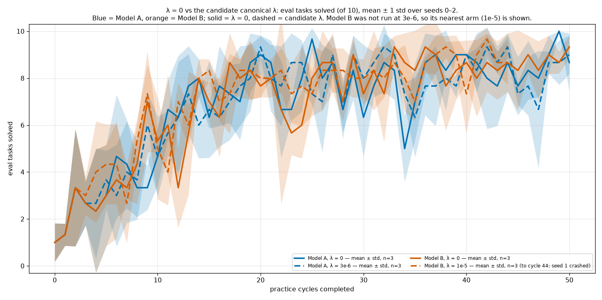
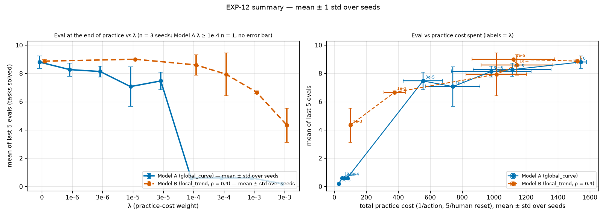
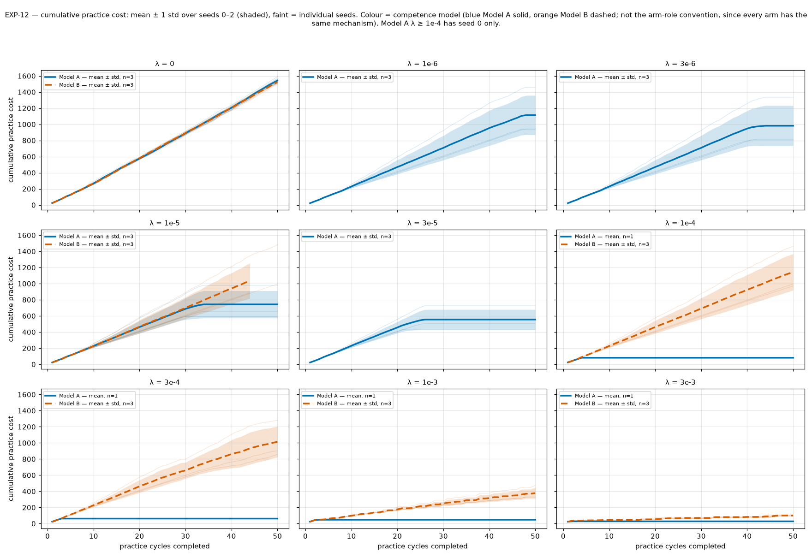

| Practice side | Robot side only — FORCED by code, not chosen by the planner. From #366 (first commit 57196f0a, 2026-09-25 00:31; stack commits 47c30231 / fe73dc1c / 8bb9a337) practice resets could only put the bin on the robot side and every practice scene was rebuilt with the bin on the robot side. Josh reversed this on 2026-09-25 ~21:40 (the planner must choose); results here are conditional on forced same-side practice. |
|---|---|
| Question | Which practice-cost weight λ should be canonical: the largest that saves practice without costing eval? |
| Hypothesis | Pre-registered. As λ grows the robot stops practising earlier, cutting practice cost (1 per action, 5 per human reset) and eventually eval. Model A stops sooner than Model B at the same λ, because its learning-rate estimate collapses after the first successes (EXP-05/06). Decision rule, fixed before the runs: per model, the canonical λ is the largest one whose final eval is within 1 task of λ = 0's; if the two models disagree, both go to Josh. |
| Results TL;DR | Model A has a cliff, Model B degrades smoothly (seeds 0–2; n = 3 is too few for firm inference). Mean of the last 5 evals over 3 seeds, paired against λ = 0 on the same seeds: Model A 8.8 at λ = 0; 8.3 (1e-6, −0.5, p = 0.49), 8.1 (3e-6, −0.7, p = 0.36), 7.1 (1e-5, −1.7, p = 0.20), 7.5 (3e-5, −1.3, p = 0.044); every λ ≥ 1e-4 quits before its first scoring throw (0.2–0.6, seed 0 only). Practice cost 1542 → 1114 / 982 / 743 / 555. Model B 8.9 at λ = 0; 9.0 (1e-5, +0.1, p = 0.18), 8.6 (1e-4, −0.3, p = 0.60), 7.9 (3e-4, −0.9, p = 0.47), 6.7 (1e-3, −2.2, p = 0.003), 4.3 (3e-3, −4.5, p = 0.037). Practice cost 1523 → 1122 / 1144 / 1014 / 378 / 100. Rule "largest λ within 1 task of λ = 0": pre-registered seed-0 final eval gives Model B 3e-4; the 3-seed last-5 mean gives Model A 3e-6 and Model B 3e-4. A single λ that passes for both is 3e-6 (Model B untested there but bracketed by 0 and 1e-5, both ~9.0). Fix (b): 0 NoFeasibleTossDirectionError crashes in 37 runs, but its rejection path never fired, so it is untested on a moved bin. One run (Model B 1e-5 seed 1) crashed at cycle 45 with BinPlacementViolationError: the reset could not place the bin because the robot stood in the reset region. |
| Validation | These are also the validation runs for fix (b) (toss feasibility from the bin's live pose; infeasible candidates rejected instead of crashing): none of the 10 runs may raise NoFeasibleTossDirectionError. Each run's count of rejected no-feasible-direction candidates and of bin moves during practice is reported. The runs are stopped early if either check fails in the first cycles. |
| Arms | λ ∈ {0, 1e-4, 3e-4, 1e-3, 3e-3} × {Model A (global_curve), Model B (local_trend, ρ = 0.9)}, plus Model A at λ ∈ {1e-6, 3e-6, 1e-5, 3e-5} (added 16:50 after every Model A λ ≥ 1e-4 arm quit practising in cycles 2–4 with 0 scoring throws — testing whether a smaller cost only delays the quit); grid engine, 50 cycles × 20 actions, ε = 0.5, human reset cost 5, non_epsilon evidence, seed 0 only (one run per arm: no inference supported). Code: fix (b) on #370. |
| Status | Done (21:00) — 36/37 runs finished, 1 crashed (bin-placement bug; since fixed in #374). |
| Decisions after this experiment |
|
EXP-12 results
Full page with table: exp12-lambda/index.html.


EXP-12 practice timelines — all 37 runs
Skill chosen at each action of each of the 50 practice cycles, one chart per run (Model A = global_curve, Model B = local_trend; λ and seed in each caption). Practice bins are on the robot side only (forced by the EXP-12 code).
timelines-exp12/global_curve-lam0-s0.pngtimelines-exp12/global_curve-lam0-s1.pngtimelines-exp12/global_curve-lam0-s2.pngtimelines-exp12/global_curve-lam1e-6-s0.pngtimelines-exp12/global_curve-lam1e-6-s1.pngtimelines-exp12/global_curve-lam1e-6-s2.pngtimelines-exp12/global_curve-lam3e-6-s0.pngtimelines-exp12/global_curve-lam3e-6-s1.pngtimelines-exp12/global_curve-lam3e-6-s2.pngtimelines-exp12/global_curve-lam1e-5-s0.pngtimelines-exp12/global_curve-lam1e-5-s1.pngtimelines-exp12/global_curve-lam1e-5-s2.pngtimelines-exp12/global_curve-lam3e-5-s0.pngtimelines-exp12/global_curve-lam3e-5-s1.pngtimelines-exp12/global_curve-lam3e-5-s2.pngtimelines-exp12/global_curve-lam1e-4-s0.pngtimelines-exp12/global_curve-lam3e-4-s0.pngtimelines-exp12/global_curve-lam1e-3-s0.pngtimelines-exp12/global_curve-lam3e-3-s0.pngtimelines-exp12/local_trend-lam0-s0.pngtimelines-exp12/local_trend-lam0-s1.pngtimelines-exp12/local_trend-lam0-s2.pngtimelines-exp12/local_trend-lam1e-5-s0.pngtimelines-exp12/local_trend-lam1e-5-s1.pngtimelines-exp12/local_trend-lam1e-5-s2.pngtimelines-exp12/local_trend-lam1e-4-s0.pngtimelines-exp12/local_trend-lam1e-4-s1.pngtimelines-exp12/local_trend-lam1e-4-s2.pngtimelines-exp12/local_trend-lam3e-4-s0.pngtimelines-exp12/local_trend-lam3e-4-s1.pngtimelines-exp12/local_trend-lam3e-4-s2.pngtimelines-exp12/local_trend-lam1e-3-s0.pngtimelines-exp12/local_trend-lam1e-3-s1.pngtimelines-exp12/local_trend-lam1e-3-s2.pngtimelines-exp12/local_trend-lam3e-3-s0.pngtimelines-exp12/local_trend-lam3e-3-s1.pngtimelines-exp12/local_trend-lam3e-3-s2.pngEXP-12 practice resets per cycle (corrected)
Cumulative resets per practice cycle, per model (columns) and λ (colour): (a) all, (b) ask_for_reset (human), (c) the second reset skill non_human_reset, which in this code is also executed by the human (same cost 5, counted as a human intervention), (d) resets that put the bin on the opposite side: 0/3187 across all 37 runs, as forced by the EXP-12 code. At every λ > 0 run with 3 seeds (except Model B 3e-3) the seeds split: seeds 0–1 call ask_for_reset 4–7 times and take the rest through the second skill, seed 2 the reverse. Replaces an earlier figure that counted only ask_for_reset and mis-paired resets with bin poses.

EXP-12 practice videos — Model A, λ = 0 vs λ = 3e-6, seeds 0–2
All 50 practice cycles per run, replayed from the run's own state log at 2x speed, one clip per cycle plus one all-cycles video. 'Reset H' = ask_for_reset (human); 'Reset H2' = non_human_reset, which is also executed by the human at cost 5. Practice bins are on the robot side only (forced by the EXP-12 code). All 6 runs done.
videos-exp12/global_curve-lam3e-6-s0/all-50-practice-cycles.mp4videos-exp12/global_curve-lam3e-6-s0/index.htmlvideos-exp12/global_curve-lam3e-6-s1/all-50-practice-cycles.mp4videos-exp12/global_curve-lam3e-6-s1/index.htmlvideos-exp12/global_curve-lam3e-6-s2/all-50-practice-cycles.mp4videos-exp12/global_curve-lam3e-6-s2/index.htmlvideos-exp12/global_curve-lam0-s0/all-50-practice-cycles.mp4videos-exp12/global_curve-lam0-s0/index.htmlvideos-exp12/global_curve-lam0-s1/all-50-practice-cycles.mp4videos-exp12/global_curve-lam0-s1/index.htmlvideos-exp12/global_curve-lam0-s2/all-50-practice-cycles.mp4videos-exp12/global_curve-lam0-s2/index.htmlCommitted with this log
The figures and clips from this experiment that are committed to the repository (PNGs downscaled to ≤ 300 KB).


EXP-12 λ = 0 vs candidate canonical λ, eval mean ± std

EXP-12 mean ± std summary

EXP-12 cumulative practice cost, mean ± stdEXP-12 eval and cumulative practice cost per cycle, per model and λEXP-12 cumulative practice resets per cycle (all / ask_for_reset / second reset skill / opposite side)EXP-12 Model A, λ = 3e-6, seed 0, practice cycle 15; re-encoded at lower quality